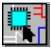

|
|
|||||||||
|
|
|
|
|
|
|
|
|
|
|
This chapter contains the following sections describing the OrCAD Capture 16.6 (henceforth referred to as Capture) release.
Capture 16.6 release brings you the following new features and enhancements:
You can now Launch SigXplorer on a flat net from OrCad Capture to perform Signal Integrity (SI) analyses and associate the Electrical Constraint set (Electrical Cset) to the flat net back to Capture from Signal Explorer. The complete topology file is also embedded into the DSN. OrCAD Capture also supports a distributed design environment for SI analysis by allowing you to export the net connectivity as topology files that can be updated using SigXplorer and then imported to OrCAD Capture.
OrCAD Capture provides you capabilities to set up SI libraries, assign SI models and then explore the signals in SigXplorer. You can also export and import Electrical Csets in Capture. In addition, you can audit Electrical Csets and model assignments.
You can import the topology files to Allegro Constraint Manager and perform audit on topology files.
 Video
Video
To view a demonstration of this feature, click here.
Note: All Signal Integrity tasks are available under the SI Analysis menu in OrCAD Capture.
In 16,6, you can place PSpice components directly by choosing Place - PSpice Component. The menu items list parts categorized as the following:
Note: The devices added using this menu have ideal SPICE models
|
|

|
RAM: 8kX1, 8KX8 |
|
|
|
ROM: 32KX1 |
You can now customize the menus and toolbars in OrCAD Capture, PSpice, PSpice Advanced Analysis, and Model Editor. As a result, any TCL methods that you want to be able to run from the menus is possible. For all menus in Capture, you can now customize the menu labels and status messages barring the menus being loaded from plug-ins such as the PSpice and PICFlow menus. You can also specify your own icons for the menus or toolbars items and customize the tool tip as well. The resource files for menus and toolbars including the icons are located at:
<Cadence_installation>\share\orResources
You can add menus through XML files where you specify:
You can also add dynamic menu items using TCL code.
Note: The pop-up menus cannot be customized.
Pages that are changed and need to be saved are marked by the asterisk (*) symbol in the Project Manager. When you save a design, the marked pages are saved.
Two new advanced search features have been added in the Find toolbar in 16.6:

|
Property Name Value support: Now you can search for any object type in capture by providing its complete property name and value pair as a search string. To search for an object with a specific property name-value pair, choose Property Name=Value option from the Find drop-down menu and specify the property name-value pair. For example, to search for parts with PCB Footprint value starting with dip2, use the search string PCB Footprint=dip2*. |
Note: Note that wildcard and question mark entries are only supported for the value string. You need to provide the complete property name in the search string.
|
|
Regular Expressions support: To search using a regular expression, select Regular Expressions option from the Find drop-down menu and specify the regular expression as the search string. Find now supports all TCL regular expressions in the search string. For example, to search for all parts with references containing R or C followed by any number between 2 and 9, use the search string Part Reference=(C|R)[2-9] with both Property Name=Value and Regular Expressions option selected. |
Note: Note that with Regular Expressions search feature enabled, Find performs a complete match for a search string containing alpha-numeric characters, underscore (_) or space unlike the standard regular expression search in TCL. For any other characters or patterns in the search string, standard TCL regular expression search behavior is observed.
Note: With Property Name=Value search enabled along with Regular Expressions search option, regular expressions search is supported only for the property value string.
In 16.6 the NetGroup use model is aligned with the Bus use model to present an intuitive environment to the user.
You can now place NetGroup aware aliases on a bus instance by selecting NetGroup Aware Aliases. You can either select an existing NetGroup from the list or edit the list to specify a new NetGroup. The width of the alias is updated from the specified NetGroup.
You can now reorder pins in an unnamed NetGroup. From the pop-up menu for an unnamed NetGroup on your schematic, choose Reorder pins for UnNamed NetGroup.
You can now add or remove pins by choosing the Add/Remove Pins on NetGroup Block option for a placed NetGroup block.
You can easily determine if any component in a design references a NetGroup by looking at the design, which shows the instance name followed by the NetGroup name and width in curly braces. For example, a hierarchical port PORTBOTH-R referencing the NetGroup JTAG[0..3] with width 4 is shown on the design as PORTBOTH-R{JTAG:4}.
When you search for a NetGroup, the result displays all objects, based on the filter, that reference NetGroups. For example, if your search for a NetGroup JTAG and a hierarchical port references this NetGroup, the result will display the port as shown in the figure.
The Find and Replace dialog box (Edit - Global Replace) now has an option, OffPage Connector, to find and replace offpage connectors.
You can now choose Replace Cache option from the pop-up menu for multiple cache parts.
You can now set the newly added User Assigned Flag in OrCAD Capture to preserve designators and references in conjunction with the Preserve designator and Preserve User Assigned Valid References in the Annotate window.
You can mark references as user assigned by choosing User Assigned Flag - Set from pop-up menu of the part in the schematic editor or from the pop-up menu of the Reference property in the Property Editor.
OrCAD Capture marks a reference as user assigned if:
In 16.6, in addition to schematic level annotation, you can also perform design level annotation by selecting the Design Level option in the Miscellaneous tab of the Preferences dialog box. You can also choose to preserve references when you copy by selecting the Preserve reference on copy option.
OrCAD Capture 16.6 DSN and OLB files are enhanced to:
You can open designs created using earlier version without uprevving the designs. You need to uprev such designs only when you save them.
Now you can close all open tabs from the menu items with one click.
You can now selectively waive DRC by choosing the Waive DRC option from the pop-up menu for the DRC on the canvas.
You can also add you own DRC using TCL scripts. To do so, click Configure Custom DRC from the Electrical Rules tab of the Design Rules Check dialog box (Tools - Design Rules Check).
Project Save As functionality has been enhanced in 16.6 with the capability to save the associated files present inside or outside the project directory along with the project at the new location while maintaining their internal and external links. Associated files include referred projects, designs, libraries, simulation profiles, output files and so on.
While saving a project in 16.6, you can specify a project name that is different from the design name.The Project Save As settings can be customized using the Settings tab of the dialog box which gives you the option to copy the design file along with the project and rename it. You can also selectively specify to copy the referred files present within or outside the project folder.
To aid learning of various Electrical and Electronics Engineering concepts using OrCAD Capture and PSpice, a new option - Learning Resources - is made available in the OrCAD Capture Help menu.
The learning material covers several diverse topics, ranging from basic theorems to some of the advanced topics in the field of Electrical & Electronics Engineering. It also introduces basic Electronics Design Automation (EDA) concepts.
This is an interactive learning material that uses design created in Capture to explain the concepts. As you go through the module, you open the circuit relevant to the current module by clicking the icon () on the right.
When you choose Help - Learning Resources in OrCAD Capture, depending upon the installed resource modules, you may see one or more learning modules on different topics listed in the left pane. You can augment the list by installing additional learning resources.
Note: Ensure that Windows Internet Explorer 7 or or a later version is available in your system to be able to use Learning Resources.
The following lists the problems reported and fixed in Capture16.6. For detailed information about a fixed problem, contact your customer support.